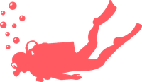
Registra inmersiones, identifica especies marinas con IA y descubre centros de buceo cerca de tus sitios favoritos.
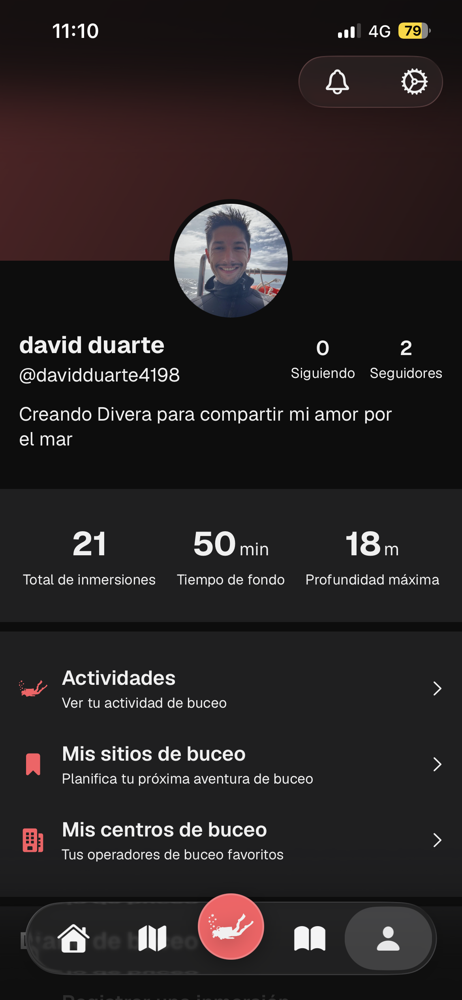
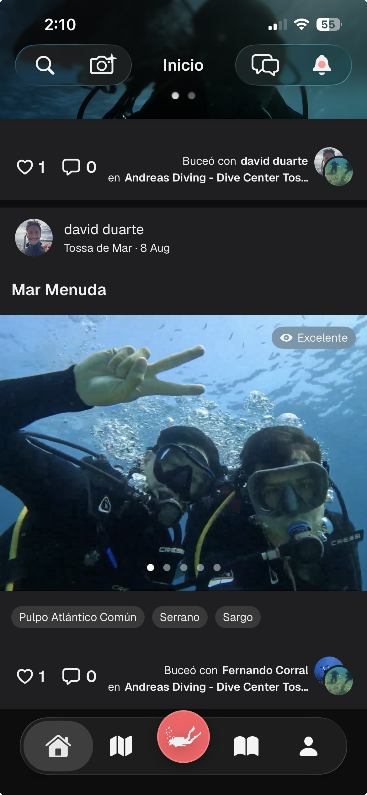
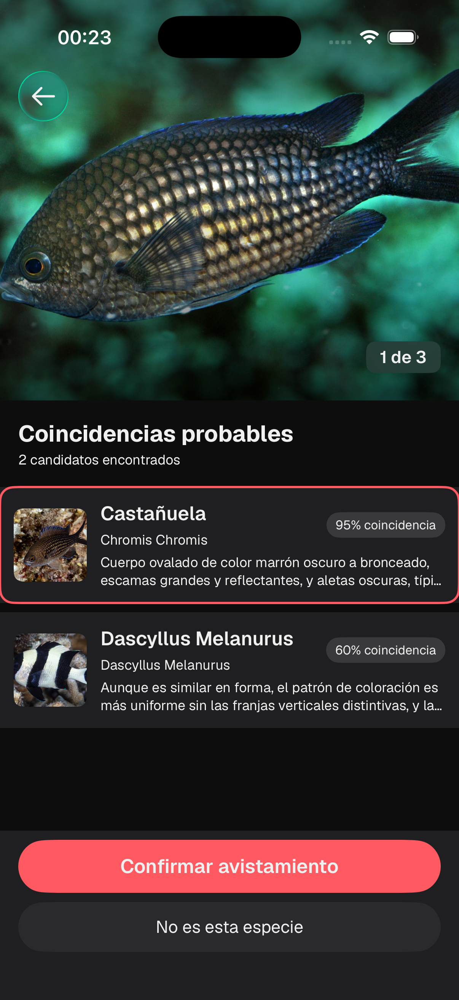
Después de tu inmersión, la IA analiza tus fotos y tus vídeos submarinos y propone qué especie es cada uno, con el fotograma exacto donde aparece. Sin experiencia previa: solo graba o fotografía lo que ves. Bajo el agua, la cámara encuadra el pez y dispara sola cuando lo tiene nítido.
Tú confirmas la identificación, siempre. Cada avistamiento confirmado alimenta tu colección y el historial del sitio donde bucea todo el mundo.
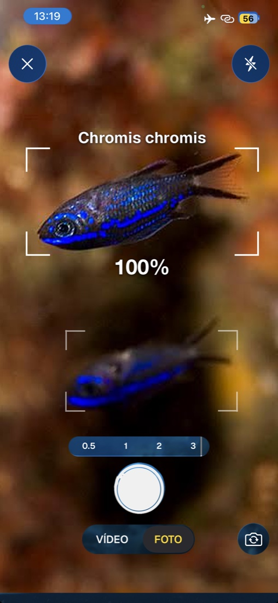
Lo que ves ahí abajo es un dato que casi nadie recoge. Si lo autorizas, tus avistamientos con foto viajan a MINKA, la plataforma de biodiversidad marina, bajo licencia abierta. Y si importas la inmersión desde tu ordenador, el perfil de temperatura y profundidad puede ir de forma anónima a BlueDOT (Universidad de Bremen / MARUM), que estudia cómo se está calentando el mar.
Creada por buceadores, para quienes quieren mirar más de cerca y aprender en profundidad.
Cada inmersión es un registro completo. Profundidad, condiciones, fotos, especies avistadas y compañeros. Un historial que crece con cada salida.
La IA propone la especie a partir de tus fotos y vídeos submarinos; tú confirmas. Construye tu colección personal de avistamientos. Más de 5500 especies para descubrir.
Busca compañeros para tu próxima inmersión o publica un plan en grupo. Coordina fecha, sitio, equipo y centro desde la app. La logística, resuelta antes de tocar el agua.
Mapa de sitios y centros con condiciones, vida marina avistada y valoraciones. Mira qué están encontrando otros buceadores en tus spots favoritos.
Sube el archivo de la inmersión (.fit o .uddf) y Divera rellena los datos objetivos: tiempo de fondo, profundidad máxima y media, perfil de temperatura, mezcla y presión de botella. Tú solo añades lo que viste.
Editor con 7 filtros de corrección de color subacuático para fotos y vídeos. El agua se lleva el rojo a partir de los primeros metros; estos filtros lo devuelven sin repintar la escena.
Ve qué están avistando otros buceadores en los sitios que frecuentas. Comparte tus inmersiones, sigue a buceadores que exploran las mismas aguas y construye un historial compartido de lo que ocurre bajo la superficie.
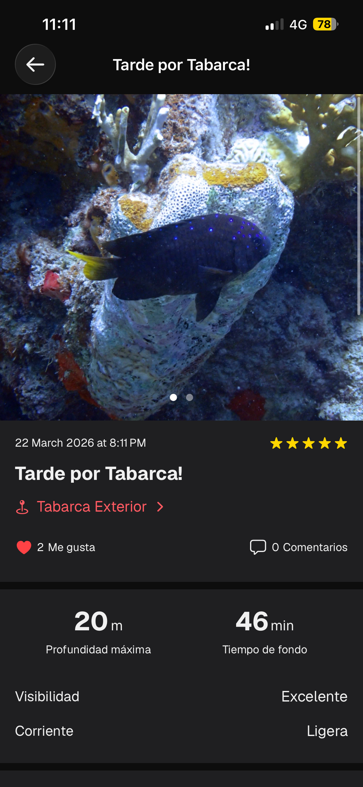
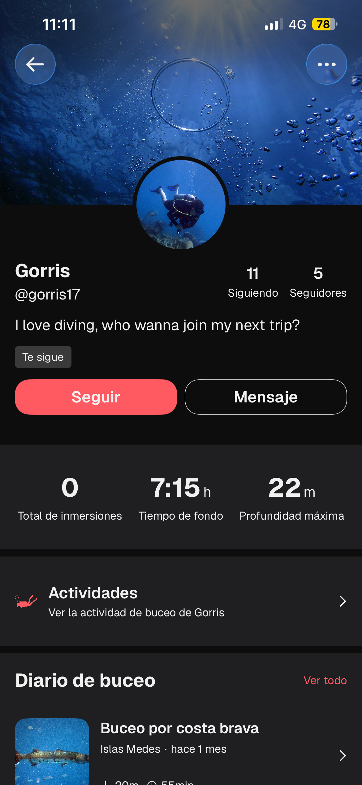
Conocimiento bajo la superficie. Estado de conservación, rangos de profundidad, comportamiento, datos curiosos y consejos prácticos para buceadores. Todo para cada especie que encuentres, con datos de la UICN y consejos reales de buceadores.
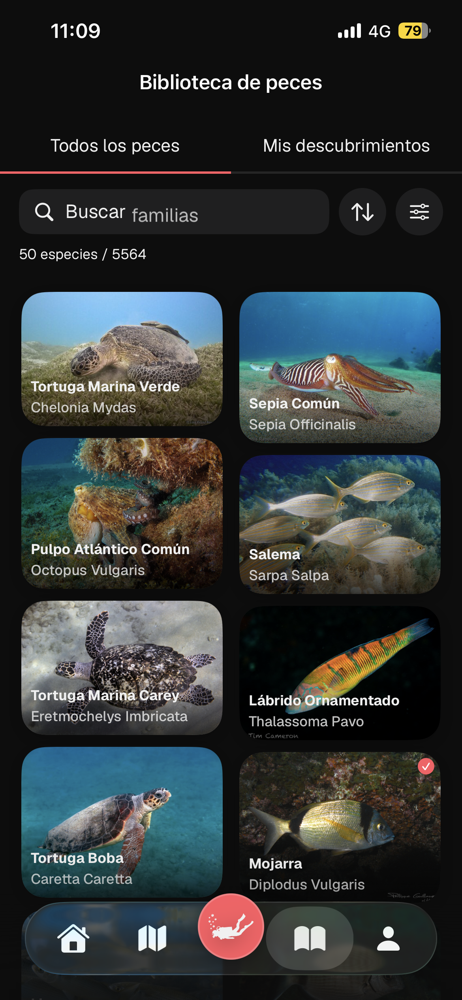
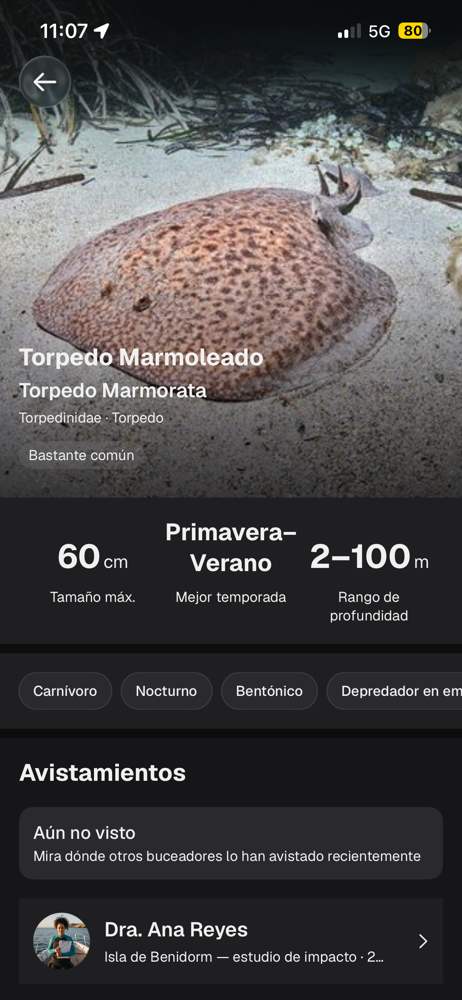
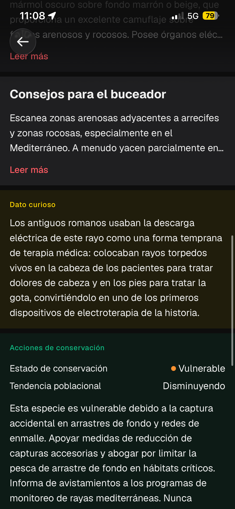
Explora sitios de buceo con condiciones, mejor época y actividad de la comunidad. Y lo que casi ninguna app te cuenta: si el sitio está dentro de un área marina protegida, qué normativa aplica y qué especies amenazadas viven ahí, con su estado UICN.
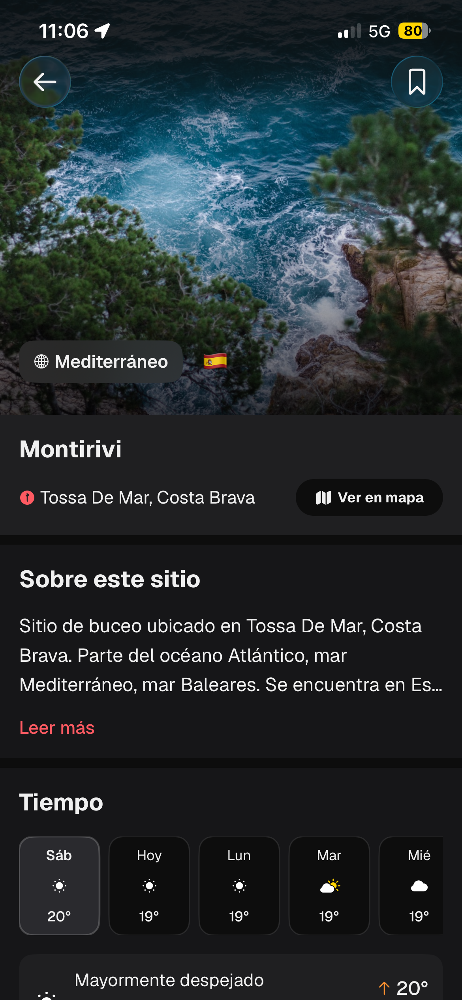
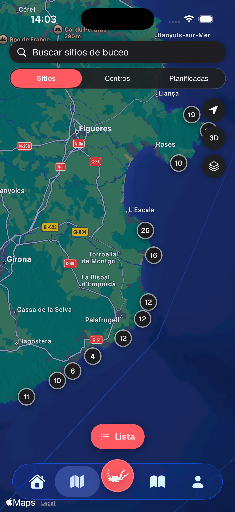
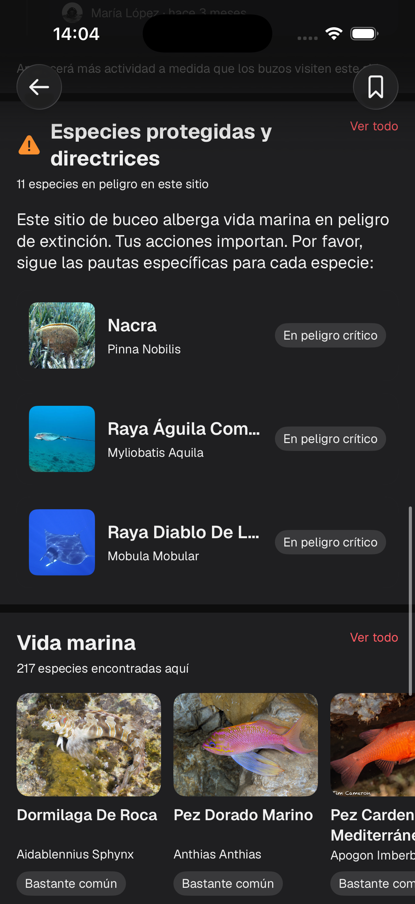
Cada sitio muestra también los centros de buceo más cercanos. ¿Tienes un centro? Descubre Divera para centros →
Cada sitio de buceo muestra los centros cercanos con valoraciones, datos de contacto y horarios. Alterna entre sitios y centros en el mapa. Todo lo que necesitas para planificar tu próxima inmersión.
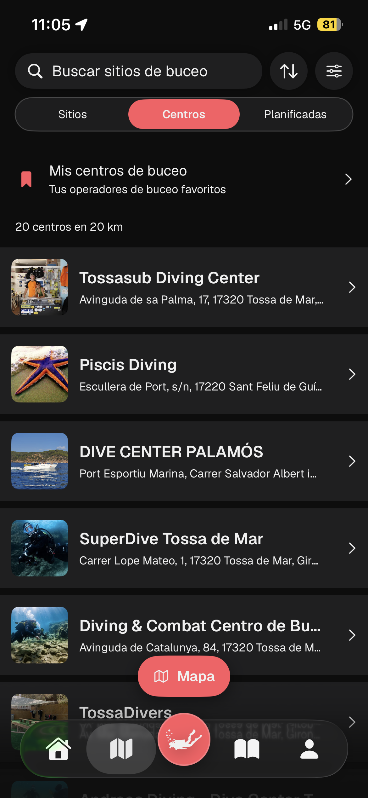
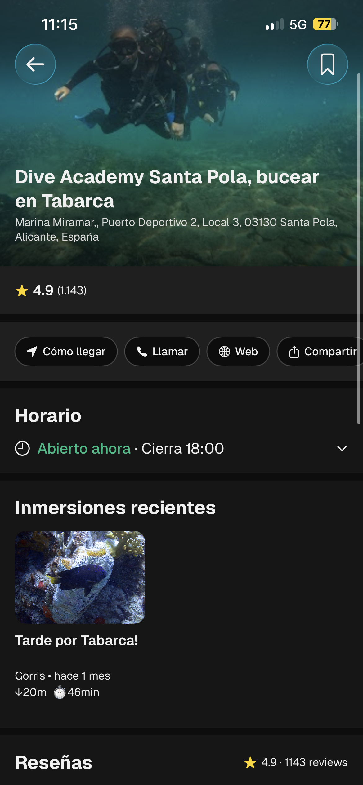
Busca compañeros para una salida o publica un plan en grupo. Elige sitio, fecha, equipo y centro. Otros buceadores se unen, los centros confirman. La logística, resuelta desde el móvil.
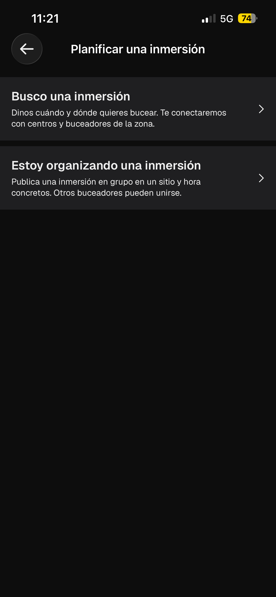
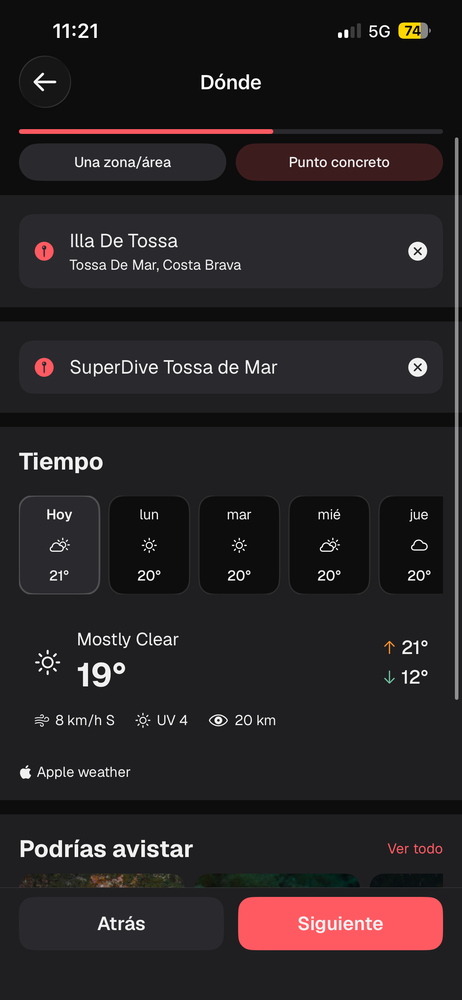
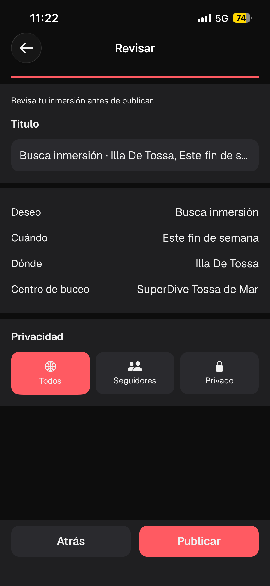
Guarda fotos de tu certificación y seguro, datos de contacto, número de inmersiones y experiencia. Cuando un centro te pide papeles antes de bucear, los tienes a mano. Lo que mandabas por WhatsApp, ya en tu perfil.
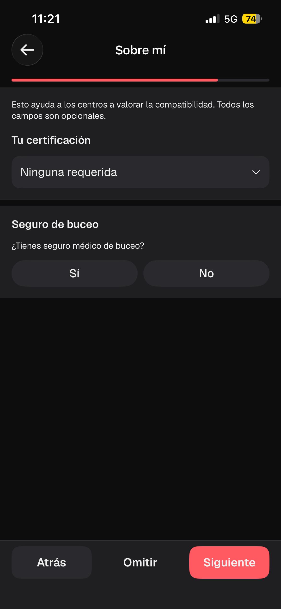
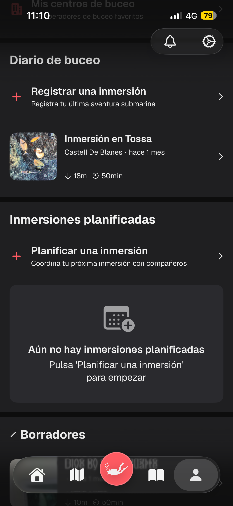
Un panel web para tu día a día: la lista de inmersiones de hoy con quién va, si pagó, si firmó y si entregó el cuestionario médico. Reservas, ficha de cada buceador, personal asignado y material de alquiler en un mismo sitio. Y tu centro visible en cada punto de inmersión de la app.
El panel ya está funcionando en centros reales y es gratis para tu centro. Estamos incorporando a los siguientes con acompañamiento directo.
Buscamos centros que crean que bucear debería dejar el océano en mejor estado del que lo encontramos. Los primeros colaboradores ayudarán a dar forma a lo que Divera se convierte.
Demo de 30 minutos, sin compromiso.
Creemos que la comunidad de buceo guarda algo extraordinario: millones de ojos bajo la superficie, cada semana, en todo el mundo. Ahora mismo, la mayor parte de esa observación desaparece después de cada inmersión. Estamos construyendo Divera para cambiar eso. Un lugar donde cada inmersión alimenta el conocimiento, y el conocimiento alimenta la protección. Todavía no hemos llegado. Pero con la comunidad adecuada, lo haremos.
Descarga Divera gratis y empieza a registrar tus inmersiones hoy.
Descargar la appSin spam. Solo novedades importantes.
Escríbenos y te responderemos lo antes posible.
Mensaje enviado. Te responderemos pronto.